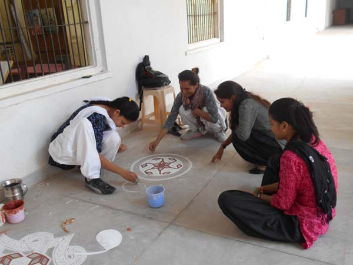
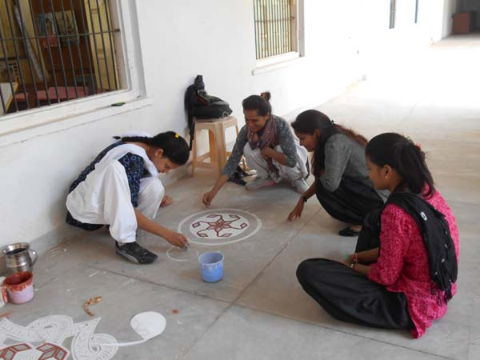

|
Banasthali – A leading name in women’s education all over the world. Ever since its inception Banasthali has thrived as a unique institution. It has always been conscious to preserve and nurture its moral values and educational ethics.Its full-fledged aims at an all round development of
students personality is known as Panchmukhi Shiksha programme. “Art is a unique mode of expressing a cultured way of life. The Department of visual art in Banasthali Vidyapith dates back to the origin of Vidyapith and it has been making continuous strides on the
road of its growth. Retrospectively, Drawing subject was initiated The department now offers degree Course in Drawing & Painting, B.A., M.A. & M.Phil. courses.
Achieved through personal vision, self-direction, critical ability technical knowledge and creative energy the students are encouraged
to build the capacity of critical thinking and life long learning. On October 25, 1983 Banasthali Vidyapith was declared to be deemed to be a University.A comprehensive process for re-orienting the total
human personality to a value system was initiated.
|

|
|---|